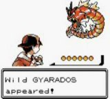
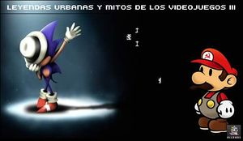

Leyenda urbana
 De: La Frikipedia, la enciclopedia extremadamente seria.
De: La Frikipedia, la enciclopedia extremadamente seria.
| De la serie fenómenos sociológicos:
|
| Leyenda urbana
|
| 
|
| Leyenda urbana típica de videojuegos
|
|
| Fenómeno sociológico
|
Historias que son trola
|
| Principios
|
Hallá en el siglo...
|
| Zona de origen
|
Cualquiera donde hubiera aburrimiento
|
| Consecuencias
|
Muchas películas de terror sin originalidad
|
| Símbolos típicos
|
Un Emo borracho o una tía en camisón de abuela en medio de la carretera en la noche
|
| Frikismo
|
A la altura de Iker Jimenez
|
| ¿Gusta a la gente normal?
|
A los normales extraños, sí
|
| ¿Recomendable?
|
Mucho, oh, sí
|
| Máximo exponente
|
Muchaha de la curva o Bloody Mary
|
Tiene dos definiciones:
1.-Dícese del rumor que se comenta por Internet o los bares acerca de sucesos increíbles (que con certeza no han sucedido o que, si han sucedido, no puede probarse) pero que son totalmente creíbles.
2.-Una Leyenda Urbana es algo que cuenta un borracho y se lo cree un gilipollas. Ángel Martín, el Rey de laSecta.
(Nota: no hay fotos, las fotos vistas en Internet destruyen el alma y provocan ganas de fumar.)
Los hechos narrados pueden abarcar temas tan dispares como desapariciones de vivos, apariciones de muertos, apariciones de enfermedades de lo más variadas, testimonios sobre una virilidad desaforada, hechos pasados sorprendentes sobre personas aparentemente respetables, o, en definitiva, hechos mundanos que no se los cree ni Dios
La Frikipedia presenta más abajo una recopilación de leyendas (me refería a más abajo de esta página web, ¿porqué estás mirándote ahí, tío?) He dicho LEYENDA, no eso).
Análisis científico
Leyenda urbana es una historia que cuenta un borracho y se la cree uno (o varios) gilipollas. Una de sus características es que quien la cuenta siempre jura por sus muertos que le sucedió a un conocido de un amigo suyo.
Los expertos en rumorología (que algunos dicen que es una ciencia y otros dicen que esto no es más que una leyenda urbana) no se ponen de acuerdo sobre las razones de la existencia de estos rumores. Las tres opciones que se barajan como más probables son:
- Las leyendas urbanas son creadas y extendidas por universidades de todo el mundo dentro de un programa llamado: "Medición de la Capacidad Humana de Creerse las más Grandes Gilipolleces (MCHCGG)", o MHCBBN en sus siglas en inglés. Sus resultados se miden gracias a la puñetera costumbre que tiene la gente de pulsar "reenviar" en lugar de cortar y pegar, para alegría de los spammers.
- La gente se aburre mucho. Se inventan idioteces y las airean en la red o en el bar, o en ambas/os. Para prevenirlo, la Unión Europea ha creado el "Fondo de Cohesión para la adquisición de peceras para ociosos"(FCAPO, en sus siglas en francés) y la herramienta coordinada "Programa para potenciar la observación de Peceras e Intentar Adivinar en Qué están Pensando los peces"(PPSFTGWTO, en sus siglas en Estonio, que también es un idioma de la Unión Europea). La actual revisión de los fondos europeos ha puesto en peligro este programa, con el consiguiente enfado de los estonios.
- No hay mala intención en estos rumores. Se trata simplemente de informaciones veraces que se cuentan en el bar con la boca llena de chipirones en su tinta o montaditos de chicharrones. La información así deformada es puesta por escrito en el ordenador por usuarios inhábiles (y además beodos porque vienen del bar), los lectores la comentan a su vez con sus amigos en otro bar y sucesivamente se crean las leyendas urbanas (esto último es un meta-enlace para contar cuánta gente pica y empieza a leer de nuevo, dentro del programa "Hay que joderse la cantidad de simples que hay", ぢそすぷ, en sus siglas en arameo).
Tipos
 Leyendas urbanas y mitos de los videojuegos
Las leyendas urbanas no siempre tienen que dar miedo (esto es una leyenda urbana), por eso explicaremos a continuación las variedades de historias que se pueden llegar a contar:
- Telefónicas: A su vez, se dividen en:
- Ahorrativas: Estas cuentan que si escribes el prefijo "*1273#78001" antes de llamar por teléfono, o este otro "1563*9***##76" al inicio de un mensaje, ambas acciones te saldrán gratuítas.
- De Socorro: Con el móvil apagado sin batería alguna y aunque lo acabes de birlar en la calle contigua al sex-shop de donde salías, si tecleas el código secreto 9348*23#76, el teléfono mandará una señal al satélite artificial más grande que posee la Tierra y éste a su vez enviará uns señal de socorro (con localizador incluído) a la central de emergencias más cercana a tí. Si realmente existiera ese código que nos salvase de ser atracados por el mismo niño al que le robamos el teléfono antes, de ser raptados por su madre o de cualquier otra situación de riesgo como que tu suegra intente que la lleves al bingo y tú no quieres, los que fabrican los teléfonos móviles no pondrían un código tan chungo, imposible de descifrar y que sólo lo has leído una vez en tu vida en un correo que te mandaron hace 1254 meses.
- Supersticiosas o supersticiones: Son las típicas supersticiones de toda la vida, pero se consideran leyenda urbana ya que concuerdan con la definición de la misma. Un claro ejemplo puede ser la mítica frase de: "¡No dejes el bolso en el suelo, que se va el dinero!"; que suponemos, ha sido dicha por alguien que se ha hecho rico colgando el bolso en una percha (aunque yo no conozco a nadie). Otro ejemplo podría ser: "¡Cuidado con el espejo!, ¡Si lo rompes tendrás siete años de mala suerte!"; está claro que esto lo ha dicho un desgraciado que achaca su mala suerte a que rompió un espejo cuando tenía 14 años.
- De terror: Leyenda que te cuenta alguien que dice que otro alguien conoce a un alguien al que le pasó.
- Rituales: En ellas se cuenta que si haces un ritual extraño como ponerte delante de un espejo con unas gafas de sol, una guitarra eléctrica de juguete, un chaleco jarrapastroso y unas bragas en la mano, diciendo perrea perrea al menos 5 veces, te sale Rodolfo Chikilicuatre invitándote al festival de la MTV donde la estrella será Britney Spears con 23 copas demás que se besará, no con Madonna, sino con Amy Winehouse. Cuando escuchas la historia, al principio acojona, pero cuando te das cuenta de que es remotamente imposible en el mundo entero e incluso en la nave del misterio, la cuentas a otro para que se acojone como lo hiciste tú cuando te la contaron.
- Por ciencia infusa: Son leyendas en las que se cuenta algo que te ocurre sin más, sin comerlo ni beberlo. Todos conocemos la historia famosa de la muchacha de la Torre Eiffel (sí, de la Torre Eiffel). Cuentan que si subes la torre a pie y la bajas durante un día entero, llega un momento en que ves a una joven mugrienta con cara de cadáver que te dice: "Tírate. Haz como hice yo"; y te tiras porque estás hasta los huevos. ¿Cómo conocemos este relato si siempre la gente que lo hace se tira desde arriba?; he aquí la gran pregunta nunca respondida de las leyendas urbanas del terror con desenlace mortuario.
Recopilación de Leyendas Urbanas
Por último, y exclusivamente para ilustrar someramente algunas tipologías de leyendas urbanas, se ofrece al lector algunos ejemplos. Una información más exhaustiva se editará como anexo a esta frikipedia en su Edición Aniversario.
Ejemplos de leyendas urbanas reales (bueno, casi reales):
- Un japonés inventa un método para ablandar los huesos de animales vivos y comercializa gatos metidos en botellas como si fueran barcos (de esos que se meten en botellas, claro), de la botella salen 2 tubos: uno para meter alimento y otro para sacar las heces. Juro que hace unos 4 años me llegó un mensaje así que había dado la vuelta al mundo y tenía foto y todo.
- Más o menos de la misma época, una secretaria se hace un corte en la lengua al lamer un sello de correos que al parecer había sido anteriormente utilizado como alfombra de delante de la chimenea por una pareja de cucarachas promiscuas. El caso es que la pobre mujer nota a los pocos días que se le está formando un bulto en el interior de la lengua. Alarmada acude al médico, que le extrae... ¡una cucaracha vivita y coleando!
- Una pareja de Nueva York compró como mascota para sus hijos una cría de cocodrilo recién nacido. Cuando empezó a crecer, lo arrojaron por el inodoro (o sea, por el váter) y tiraron de la cadena. Años después se encontró un cocodrilo gigante (o varios) viviendo en las alcantarillas de la ciudad, y alimentándose de ratas y desperdicios. Algunas versiones incluyen cocodrilos albinos mutantes.
- No siempre termina felizmente una leyenda urbana. Un norteamericano nos cuenta como su mejor amigo había muerto durante una excursión en un yate (este detalle es importante) por beber de una lata de cerveza elaborada en Milwaukee. Ya hay que tener ganas, pues los americanos hacen una cerveza de mierda, pero tampoco es como para matar a una persona. Finalmente resultó que unas ratas habían orinado, defecado y cosas peores encima de la lata de marras, y eso fue lo que le mató. Alternativamente podría ser una lata de Coca-cola
- El gobierno de Israel invita a dos políticos catalanes de reputación intachable a un acto de homenaje al tristemente desaparecido Isaac Rabín. Los políticos se presentan al acto pero como no ven ninguna bandera catalana se niegan a entrar, provocando la indignación de los asistentes.
- Una extraña epidemia se extiende entre niños de diversos países muy lejanos, los síntomas son muy diferentes pero coinciden en que los niños son siempre huérfanos y en que si no reenvías el mensaje 30 veces se agravará su estado. Si lo reenvías serán adoptados por un rico norteamericano, o bien aparecerán sus verdaderos padres, que no habían muerto. A veces ambas cosas a la vez, con la consiguiente sucesión de pleitos por la paternidad (salvo que el rico pertenezca a la mafia, con lo que el asunto se resuelve de forma más breve. Ahora bien, que se cure el niño nunca queda claro del todo.
- Operación truño de EE.UU, pero lo rechazaron por inútil.
- Bill Gates está poniendo a punto un programa para monitorizar el tráfico de e-mails por toda Internet. Para las pruebas finales necesita que un mail concreto sea reenviado por todo el que lo reciba. Para lograr la cooperación de la humanidad el mail a reenviar lleva en su texto la promesa de que el propio Bill Gates te ingresará 10.000 dólares (unos 18 euros) por cada FW que hagas de dicho mail y los FW que hagan los destinatarios, y los destinatarios de los destinatarios... (así sucesivamente). Unos sencillos cálculos permiten deducir que al final del experimento nueve de cada diez españoles dispondrán de alrededor de 700.000.000.000.000.000 dólares.
- Un matrimonio viaja a Turquía con motivo de su luna de miel. Un día al regresar al hotel se encuentran con que les han desvalijado la habitación y no queda nada salvo por la bolsa de aseo con los cepillos de dientes y el champú, y la cinta que estaba dentro de la cámara de video. Pese a todo deciden terminar su estancia como si nada hubiese pasado. Al volver a España meten al vídeo la indultada cinta, que debía tener algunas escenas de los primeros días del viaje. En vez de las mezquitas vieron como dos turcos, entre sonrisas, desvalijaban su habitación. Saludaban a la cámara y se reían. Uno de los turcos enseñó a la cámara los cepillos de dientes y entre risas se bajó los pantalones, se los introdujo varias veces en el culo y los volvió a dejar en la bolsa de aseo.
- Maradona jamás se ha drogado. Su increíble coordinación con la pelota hizo que unos extraterrestres decidieran extirparle el cerebro una noche tras el mundial 86 para estudiarlo, cambiándoselo por una clonación del hijo del entonces vicepresidente de los Estados Unidos, George Bush padre, pensando que era un cerebro normal y nadie se daría cuenta. El cerebro nuevo no funcionó todo lo bien que se esperaba, y Maradona empezó a comportarse como... bueno, como se comporta.
- Un hombre es ingresado con un cuadro gravísimo de diarrea. Su incontinencia fecal no puede detenerse en modo alguno. Incluso aunque el paciente deje de beber todo tipo de líquido sigue perdiendo agua a litros por esta causa, y sufre una deshidratación orgánica que acabará con él en pocas horas. Hay que encontrar una solución para que pueda dejar de perder líquido aún renunciando a cortarle la diarrea. Finalmente es salvado gracias a una transfusión de mierda.
- En el programa Sorpresa Sorpresa, Ricky Martin estaba escondido dentro del armario de la habitación de una chica, que ni corta ni perezosa se huntó de mermelada todo el tema y llamó a su perrito para que le limpiara la zona intrínseca llena de mermelada. Ricky Martin hizo 2 comentarios: WTF y OMG.
- Una mujer, sexualmente desesperada, compra una pequeña langosta, que, sin saberlo, había sido ya fecundada. En lugar de usarala para comersela, como sería lo normal, decide usarla para aliviar con su colita sus, ejem, ardores... Un día, la pobre señora, aparece muerta en su casa y los del CSI de turno destapan la sorprendente hipótesis de que la langosta, al roce con la señora, depositó dentro de ella sus larvitas que, debido al calor del interior del cuerpo humano, crecieron y eclosionaron, provocando la muerte inmediata de la señora por la explosión de millones de larvas de langostas que, en el momento de encontrarla ya muerta, salían de entre sus piernas y se amontonaban encima de ella en un dantesco espectáculo.
- Un hombre atrae a niños con chucherías para después matarlos,los padres de los niños lo mataron y en la actualidad vive detrás de los espejos,se llama candimán y está duro de oidos,por eso hay que llamarle cinco veces si quieres que aparezca y que te mate.
- Si la noche de San Juan a las 12 de la noche te pones delante del espejo con una vela saldrá la persona con la que te vas a casar(si sales tú es que no te vas a casar,simplemente te masturbarás mucho).
- Tu estas conduciendo y escuchas: cuidado con esa curva que mi novio y yo nos matamos allí te giras para mirar y te matas.
- Recoges a una chica que está haciendo autoestop la dejas en su casa y ves que se ha dejado el chaleco,se lo llevas y una señora te dice que era de su hija que murió hace años en extrañas circustancias(si esto te pasa no lleves el chaleco,la señora estará harta de que le lleven el chaleco)
- Si te pones delante de un espejo con una vela y la luz apagada verás tu entierro a no ser que sea las 12 de la noche de san Juan(si no lo ves enciende la vela o golpea suavemente el espejo).
- Si dices 85 veces seguidas en un minuto tres tristes tigres comen trigo en un tigral delante de un espejo con la luz apagada mientras suena la macarena aparecerá Van Damme.
- Si escribes en la barra de busqueda de Google las palabras "Google" y "Bud Spencer" y le das click en voy a tener suerte, el buscador te dira que Bud Spencer te ha encontrado y luego de unos minutos saldrá de la pantalla y te matará.
Enlaces externos
Experto en leyendas urbanas 1
Experto en leyendas urbanas 2
Véase También
Autor(es):
- Nexo
- Cortocircuito
- Er-migue
- Simoman
- Doctor grijander
- SPiNoZA
- Frikiman
- Aque
- Epikurolibre
- Viento
Frikipedia 2005-2016, Licencia
GFDL 1.2 - Extraído por FrikiLeaks